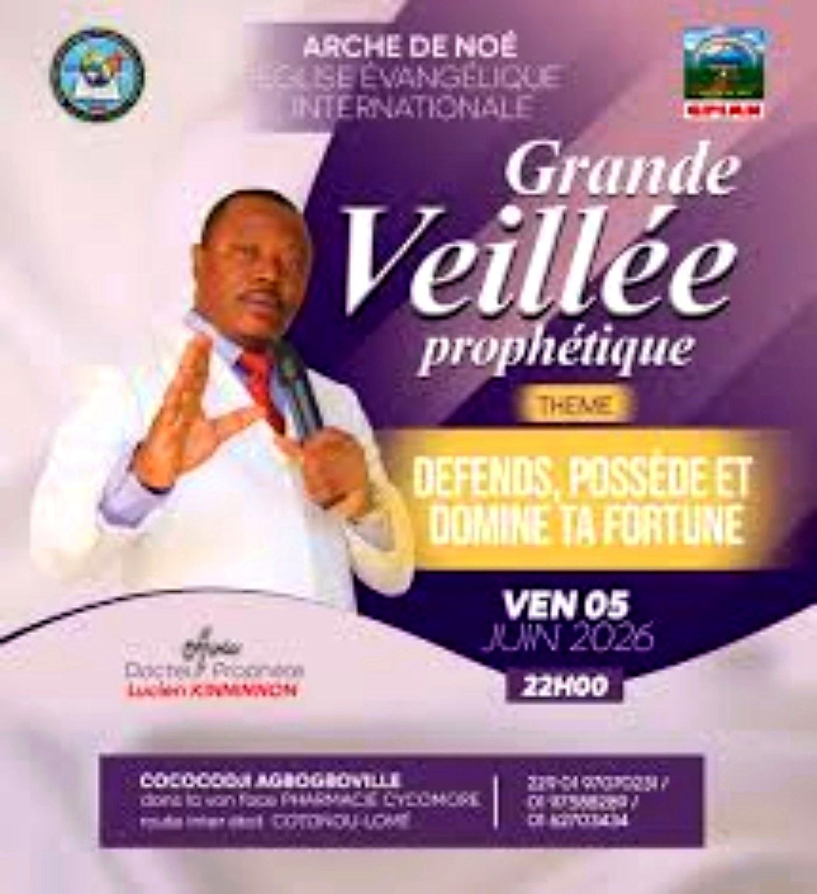
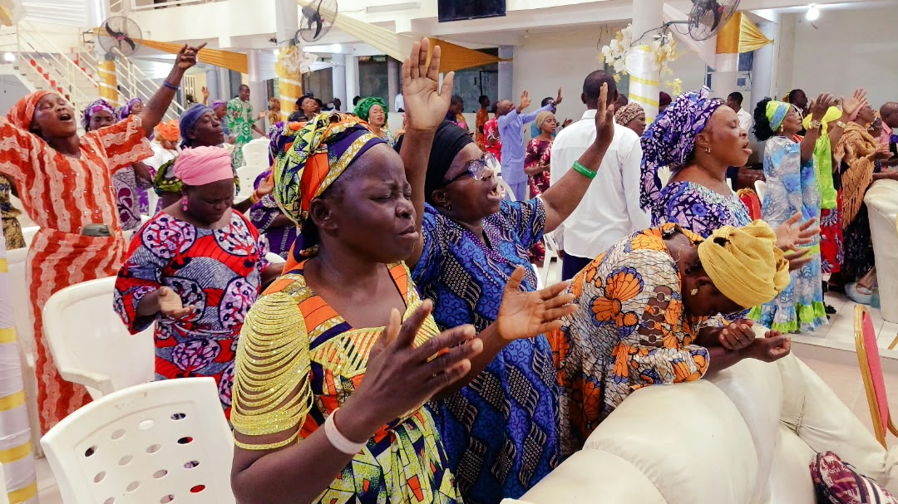
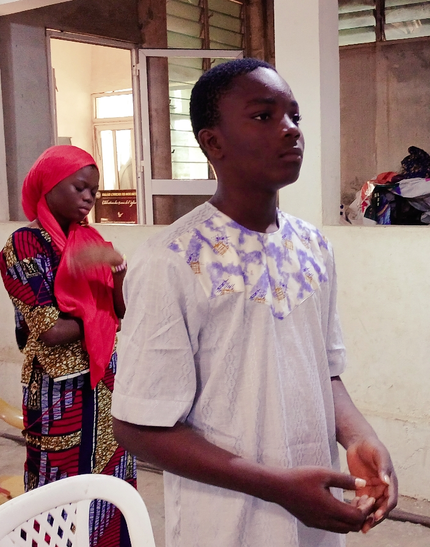
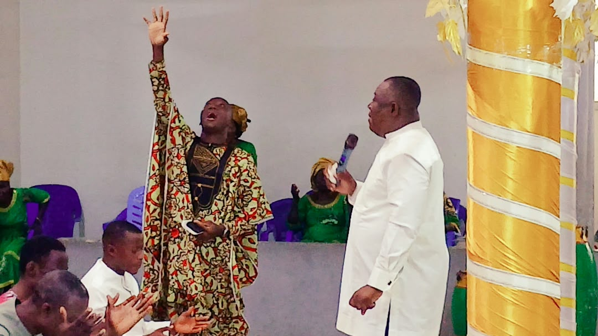

BIENVENUE À
L’ARCHE
DE NOÉ
Une famille, une foi, une destinée. Découvrez une maison consacrée à Dieu et tournée vers l’impact des nations.

Une famille, une foi, une destinée. Découvrez une maison consacrée à Dieu et tournée vers l’impact des nations.
Préparez-vous pour une grande célébration d’action de grâce.
📍 Cococodji Agbogboville — ⛪ Église Arche de Noé
« Jusqu’ici, l’Éternel nous a secourus. » — 1 Samuel 7:12



Chaque rubrique vous conduit directement vers les informations du site.
Découvrez les chapelles et responsables sur le territoire national.
ACCÉDER →✝Mission, vision et foi de la Mission Évangélique et Prophétique.
ACCÉDER →◈Découvrez le parcours du Révérend Docteur Prophète Lucien KINNINNON.
ACCÉDER →📖Écoutez et découvrez les messages pour l’édification et le salut.
ACCÉDER →★Retrouvez les programmes et grands rendez-vous de l’église.
ACCÉDER →☎Besoin d’informations ou de prière ? Contactez-nous.
ACCÉDER →Quelques moments forts de la vie de l’église.



Votre don est une semence pour l'œuvre de Dieu. Il contribue à soutenir l'évangélisation, les activités de l'Église et la proclamation de la Parole. Chaque geste compte. Que Dieu vous bénisse abondamment !
💝 FAIRE UN DON PAR WHATSAPPVous souhaitez créer un site web pour votre église, entreprise, association ou projet ? SchalTech peut vous accompagner.
📞 +229 01 61 92 76 00